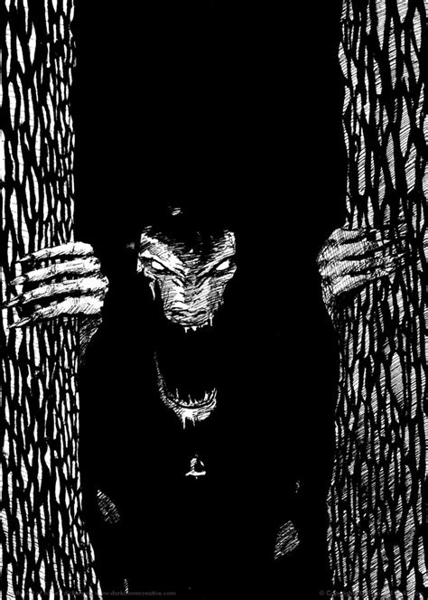

The Biloko are dwarves, reported from Zaire, with a rather large dislike for humans. It is thought that the Biloko are spirits of the dead with grudges against the living. They live and protect the deepest darkest parts of the rainforests and the treasures contained within. Only the strongest of hunters ever successfully enters and leaves such areas. These hunters must be very powerful magicians in order to hunt the prize game that is to be found in these areas. The biloko are described as having long, sharp claws, piercing eyes, and snouts with mouths large enough to swallow a human. They are hairless, but are covered with grass that grows on their bodies and wear leaves as clothes. They live in large hollow trees. They use small bells to put people under their spell so that they can eat them. Only those who possess amulets and fetishes with strong protections magicks will escape the spell.
One day a hunter took his wife, at her insistence, into the forest, where he had a hut with a palisade around it. When he went out to inspect his traps, he told her: "When you hear a bell, do not move. If you do, you will die!" Soon after he had left, she heard the charming sound of a little bell coming closer, for the Eloko has a good nose for feminine flesh. Finally, a gentle voice asked to be let in to his room. It was like the voice of a child. The woman opened the door and there was an Eloko, smelling like the forest, looking small and innocent. She offered him banana mash with fried fish but he refused: "We eat only human meat. I have not eaten for a long time. Give me a piece of your arm." At last the woman consented, totally under the spell of the Eloko. That night, the husband found her bones.